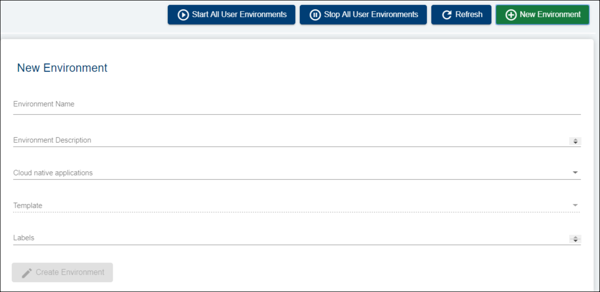
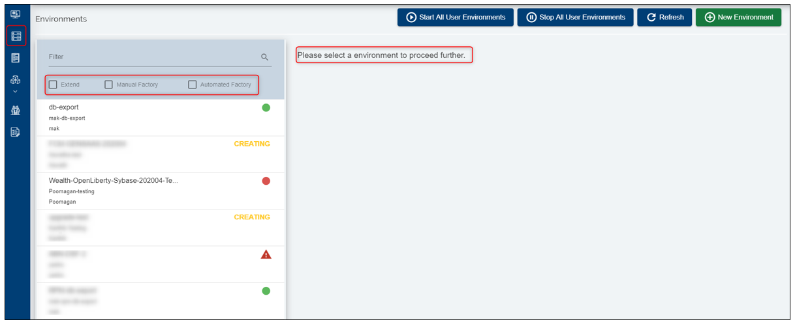
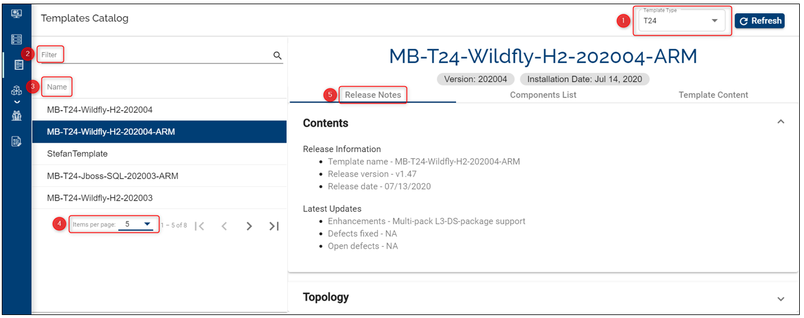
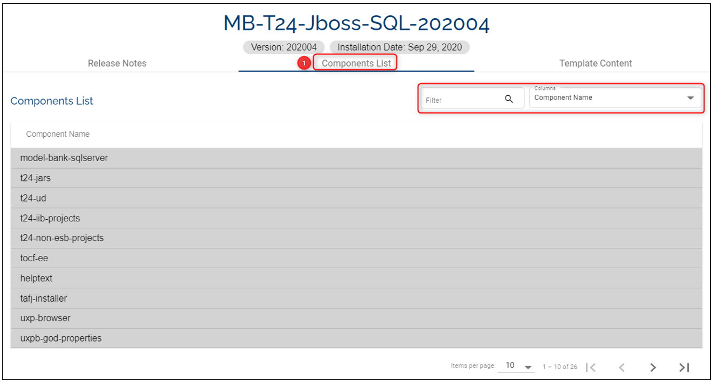
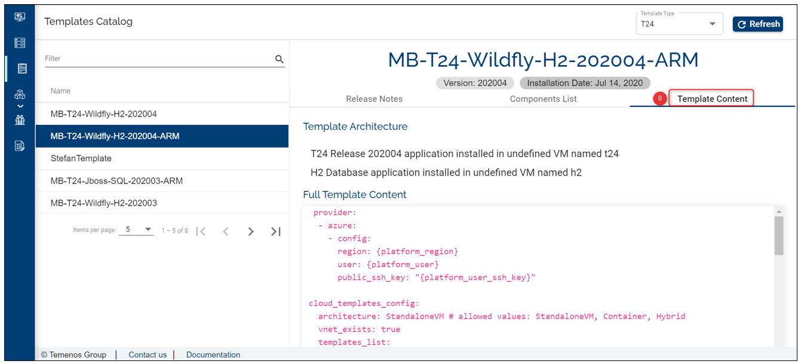

Manage Environments
- Organisation ID
The Temenos Development Platform support multitenancy and Organisations are designed to be distinctive accounts.
Upon subscription you'll receive a unique Organisation Id as a URL link. Your Organisation Id will look similar to this:

The confirmation of your Organisation activation will contain the link and access instructions to your designated Organisation administrator. The administrator is the first and only user.
- Environments
The Development platform (Extend) has the capability to provision environments in a variety of different configurations. Users can initiate a new environment and select from a predefined list of templates the application, the release and stack they wish to provision. Each month we host a new template with the latest release of Temenos suite.
The environments are customisable in terms of Name and brief description to explain their purpose. The templates follow the official Temenos configuration stack but they can be customised for Releases 2016 onwards.
Create your own environment:
- Either click the Environments tab on the left menu and then click New Environment button on the top right corner
- Or you can already see the environment page open with the fields available to create a new environment

- Fill Name and Description fields
- Select one of the available templates from dropdown list, based on your requirements
- Click Create environment All fields are mandatory except 'Labels'

To see the details of an environment you need to select it from the environments list. This window allows you to also filter the Extend environments or those resulted following a manual/ automated factory: 
- Templates
Check the list with all available templates. Click the Templates Catalog on the left menu.

Click on the Template Type and select for one of the applications, for example T24 to see the templates that are available for your organisation.
If you are looking for a specific template, type in the Filter field the keywords
Hover over the Name field to list all the available templates alphabetically
Select the number of items per page you want to display
Click on a template - on the right you will see the name of the template, its version, installation and expiration dates as well as:
The Release Notes
The Components List - these can be filtered as the user wants

The Template Content

User Roles Required
To be able to create an environment the below permissions need to be enabled for your user:
- CREATE _ ENVIRONMENT
- MANAGE _ ENVIRONMENTS
To have a better understanding of the user permissions, hover the cursor over the variables and a short description will pop up or click here to read more.